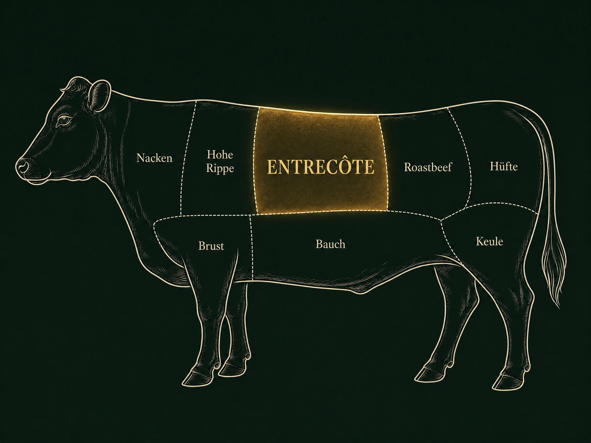

petit joujou · weinbar · leistadt
Das wahrscheinlich beste Steak der Pfalz.
PremiumEntrecôte

Bio-Angus · Land.Luft · Naturland-zertifiziert
#tierglück
Ein gutes Steak beginnt mit einem guten Leben.
- Ganzjährig auf der Weide — sommers wie winters draußen, nie im Stall
- Mutterkuhhaltung — Kälber wachsen bei ihren Müttern in der Herde auf
- Natürliches Herdenverhalten — viel Platz, eigener Rhythmus, keine Eingriffe
- Keine prophylaktischen Antibiotika — gesunde Tiere brauchen keine
- Reine Gras-Ernährung — kein Kraftfutter, kein Soja, nur Weide
- Weideschlachtung — in vertrauter Umgebung, ohne Stress
- Kein Transport — kein Verladen, kein Schlachthof, maximales Tierwohl
- Dry-aged — in Ruhe gereift für Zartheit und Tiefe
Von unserer Küche zubereitet
Auf den Punkt gegart. Das ist unser Handwerk.